Smoothing Images
In this tutorial you will learn how to apply diverse linear filters to smooth images using OpenCV functions such as:
Sources:
Contents
Theory
Note: The explanation below belongs to the book Computer Vision: Algorithms and Applications by Richard Szeliski and Learning OpenCV.
Smoothing, also called blurring, is a simple and frequently used image processing operation.
There are many reasons for smoothing. In this tutorial we will focus on smoothing in order to reduce noise (other uses will be seen in the following tutorials).
To perform a smoothing operation we will apply a filter to our image. The most common type of filters are linear, in which an output pixel's value (i.e. 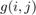) is determined as a weighted sum of input pixel values (i.e. 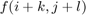):
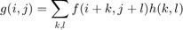
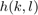 is called the kernel, which is nothing more than the coefficients of the filter.
It helps to visualize a filter as a window of coefficients sliding across the image.
There are many kind of filters, here we will mention the most used.
1. Normalized Box Filter
- This filter is the simplest of all! Each output pixel is the mean of its kernel neighbors (all of them contribute with equal weights)
- The kernel is below:
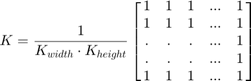
2. Gaussian Filter
- Probably the most useful filter (although not the fastest). Gaussian filtering is done by convolving each point in the input array with a Gaussian kernel and then summing them all to produce the output array.
- Just to make the picture clearer, remember how a 1D Gaussian kernel look like?
pos = get(0, 'DefaultFigurePosition'); set(gcf, 'Position',pos.*[1 1 0.5 0.5]) x = linspace(-4,4,100); plot(x, normpdf(x,0,1)) xlabel('x'), ylabel('G(x)'), grid on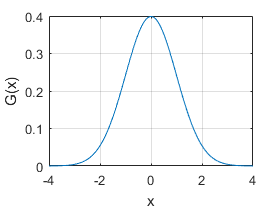
Assuming that an image is 1D, you can notice that the pixel located in the middle would have the biggest weight. The weight of its neighbors decreases as the spatial distance between them and the center pixel increases.
Note: Remember that a 2D Gaussian can be represented as:
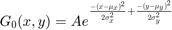
where 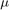 is the mean (the peak) and 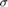 represents the variance (per each of the variables 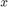 and 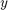).
3. Median Filter
The median filter run through each element of the signal (in this case the image) and replace each pixel with the median of its neighboring pixels (located in a square neighborhood around the evaluated pixel).
4. Bilateral Filter
- So far, we have explained some filters which main goal is to smooth an input image. However, sometimes the filters do not only dissolve the noise, but also smooth away the edges. To avoid this (at certain extent at least), we can use a bilateral filter.
- In an analogous way as the Gaussian filter, the bilateral filter also considers the neighboring pixels with weights assigned to each of them. These weights have two components, the first of which is the same weighting used by the Gaussian filter. The second component takes into account the difference in intensity between the neighboring pixels and the evaluated one.
- For a more detailed explanation you can check this link.
Code
https://github.com/opencv/opencv/blob/3.1.0/samples/cpp/tutorial_code/ImgProc/Smoothing.cpp
This program:
- Loads an image
- Applies 4 different kinds of filters (explained in Theory) and show the filtered images sequentially.
%% Smoothing Demo % Sample code for simple filters % % Sources: % % * <https://github.com/opencv/opencv/blob/3.1.0/samples/cpp/tutorial_code/ImgProc/Smoothing.cpp> % %% % Global Variables DELAY_CAPTION = 0.1; DELAY_BLUR = 0.01; MAX_KERNEL_LENGTH = 31; %% Source Image % Load the source image src = imread(fullfile(mexopencv.root(),'test','lena.jpg')); src = cv.resize(src, 2/3, 2/3); imshow(src), title('Original Image') pause(DELAY_CAPTION) %dst = cv.putText(src, 'Original Image', [size(src,2) size(src,1)]./4, ... % 'FontFace','HersheyComplex', 'FontScale',1, 'Color',[255 255 255]); %% Homogeneous blur for i=1:2:MAX_KERNEL_LENGTH dst = cv.blur(src, 'KSize',[i i], 'Anchor',[-1,-1]); imshow(dst), title(sprintf('Homogeneous Blur %d',i)) pause(DELAY_BLUR) end %% Gaussian blur for i=1:2:MAX_KERNEL_LENGTH dst = cv.GaussianBlur(src, 'KSize',[i i]); imshow(dst), title(sprintf('Gaussian Blur %d',i)) pause(DELAY_BLUR) end %% Median blur for i=1:2:MAX_KERNEL_LENGTH dst = cv.medianBlur(src, 'KSize',i); imshow(dst), title(sprintf('Median Blur %d',i)) pause(DELAY_BLUR) end %% Bilateral Filter for i=1:2:MAX_KERNEL_LENGTH dst = cv.bilateralFilter(src, 'Diameter',i, ... 'SigmaColor',i*2, 'SigmaSpace',fix(i/2)); imshow(dst), title(sprintf('Bilateral Blur %d',i)) pause(DELAY_BLUR) end
Explanation
Let's check the OpenCV functions that involve only the smoothing procedute, since the rest is already known by now.
1. Normalized Block Filter:
OpenCV offers the function cv.blur() to perform smoothing with this filter.
dbtype smoothing_demo 26:30
26 for i=1:2:MAX_KERNEL_LENGTH
27 dst = cv.blur(src, 'KSize',[i i], 'Anchor',[-1,-1]);
28 imshow(dst), title(sprintf('Homogeneous Blur %d',i))
29 pause(DELAY_BLUR)
30 end
We specify the following arguments (for more details, check the function reference):
- src: Source image
- dst: Destination image
- 'KSize',[w,h]: Defines the size of the kernel to be used (of width 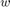 pixels and height 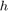 pixels)
- 'Anchor',[-1,-1]: Indicates where the anchor point (the pixel evaluated) is located with respect to the neighborhood. If there is a negative value, then the center of the kernel is considered the anchor point.
2. Gaussian Filter:
It is performed by the function cv.GaussianBlur():
dbtype smoothing_demo 33:37
33 for i=1:2:MAX_KERNEL_LENGTH
34 dst = cv.GaussianBlur(src, 'KSize',[i i]);
35 imshow(dst), title(sprintf('Gaussian Blur %d',i))
36 pause(DELAY_BLUR)
37 end
Here we use the following arguments:
- src: Source image
- dst: Destination image
- 'KSize',[w,h]: The size of the kernel to be used (the neighbors to be considered). and have to be odd and positive numbers otherwise the size will be calculated using the 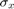 and 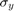 arguments.
- 'SigmaX': The standard deviation in x. Writing 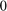 implies that is calculated using kernel size.
- 'SigmaY: The standard deviation in y. Writing implies that is calculated using kernel size.
3. Median Filter:
This filter is provided by the cv.medianBlur() function:
dbtype smoothing_demo 40:44
40 for i=1:2:MAX_KERNEL_LENGTH
41 dst = cv.medianBlur(src, 'KSize',i);
42 imshow(dst), title(sprintf('Median Blur %d',i))
43 pause(DELAY_BLUR)
44 end
We use these arguments:
- src: Source image
- dst: Destination image, must be the same type as src
- 'KSize',i: Size of the kernel (only one because we use a square window). Must be odd.
4. Bilateral Filter:
Provided by OpenCV function cv.bilateralFilter().
dbtype smoothing_demo 47:52
47 for i=1:2:MAX_KERNEL_LENGTH
48 dst = cv.bilateralFilter(src, 'Diameter',i, ...
49 'SigmaColor',i*2, 'SigmaSpace',fix(i/2));
50 imshow(dst), title(sprintf('Bilateral Blur %d',i))
51 pause(DELAY_BLUR)
52 end
We use the following arguments:
- src: Source image
- dst: Destination image
- 'Diameter',d: The diameter of each pixel neighborhood.
- 'SigmaColor',sc: Standard deviation in the color space 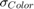.
- 'SigmaSpace',ss: Standard deviation in the coordinate space (in pixel terms) 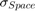.
Results
- The code opens an image (in this case lena.jpg) and display it under the effects of the 4 filters explained.
- Here is a snapshot of the image smoothed using cv.medianBlur:
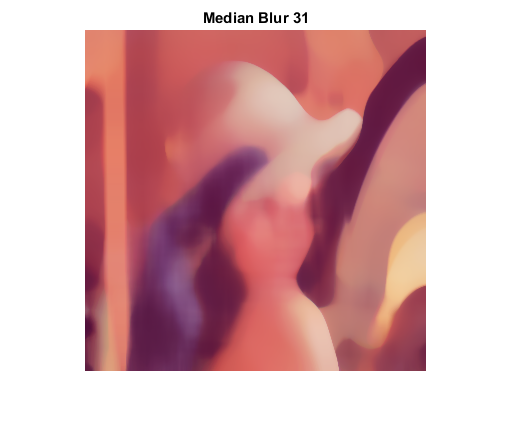